Multiples
Building a bet type that no other pool operator in the world has built before.
Research identified that customers were betting with our competitors because they offered multiples as a bet type, where a customer can combine several single bets into one bet. After identifying this as a key pain point for customers, I redesigned the betslip to be able to facilitate multiples, which I validated through customer interviews. Multiples generates £4.5M in annual revenue, and a follow-up survey found that 55% of customers bet on multiples regularly.
£4.5M Annually
Multiples Revenue
55%
Of customers bet on multiples regularly
World First
No other pool operator offers multiples
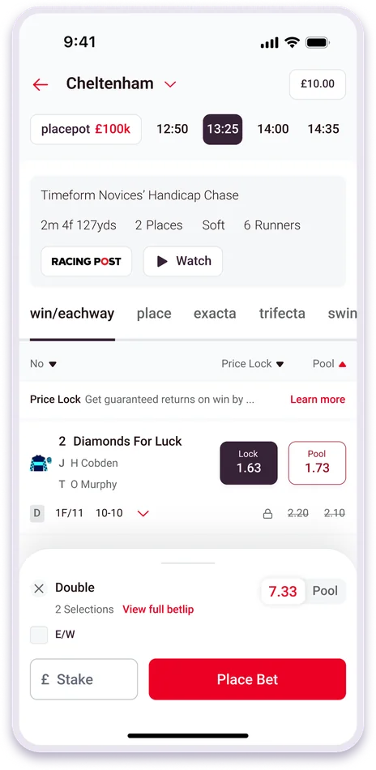
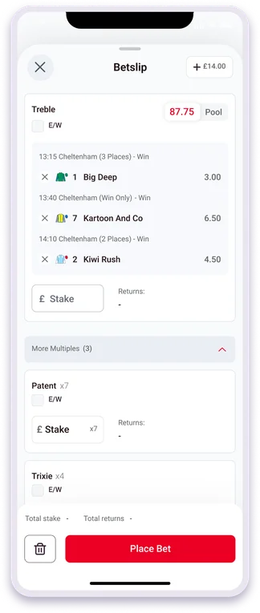
The Problem
- Customers expect the same experience with the Tote as they get with our competitors. As they could bet on multiples elsewhere, the Tote was struggling to retain customers.
- It was previously believed internally that pools betting could not be used for multiples.
- The business wanted to increase the average spend of our racing customers.
Research
Customer Surveys
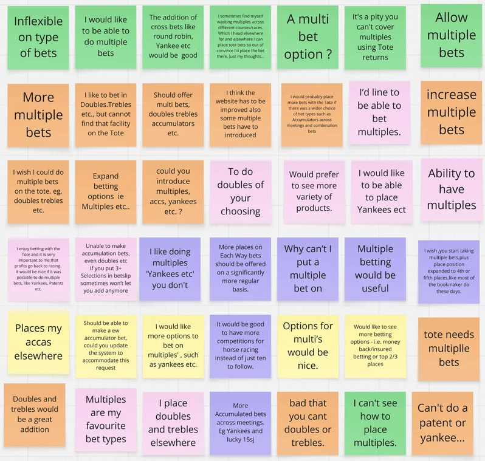
Insight
Quarterly surveys identified that not having multiples meant customers were going elsewhere to place those bets.
Competitor Analysis
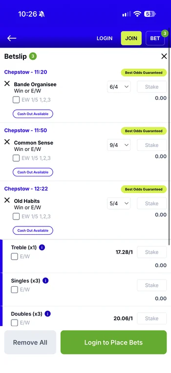
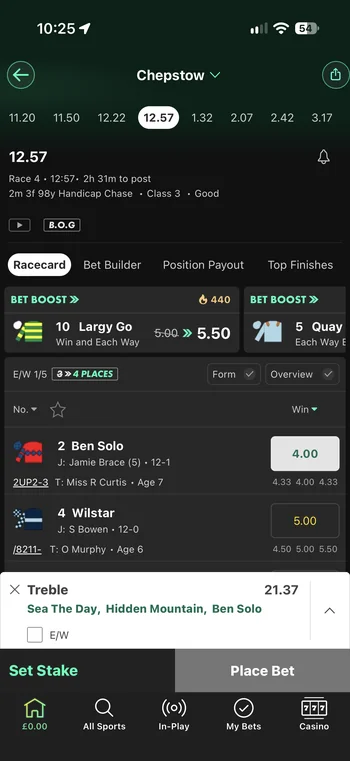
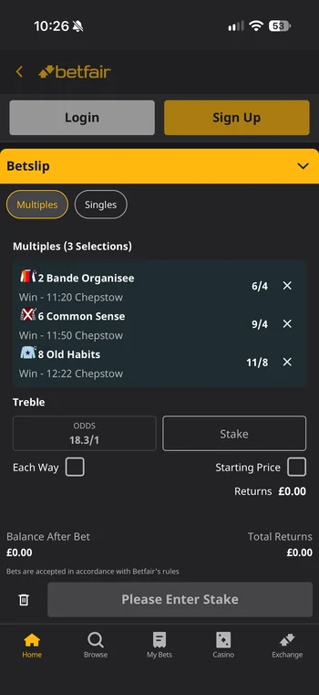
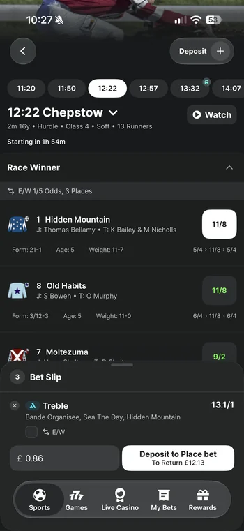
Insight
Competitor analysis showed that there was an emphasis on the importance of multiples as they were often above the fold on horse racing homepages. Furthermore, the betslip would show a multiple bet rather than a collection of singles.
Hypothesis
By giving customers the ability to combine several single bets into a multiple bet, the average spend per customer will increase, as they will be retained for a longer period.
My Design Process
-
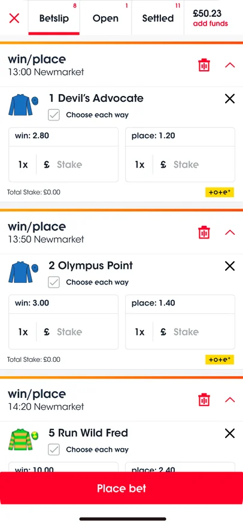
Original Betslip
- Overuse of colour.
- Two exits for every bet.
- Customers had to stake on each selection individually rather than on a multiple.
-
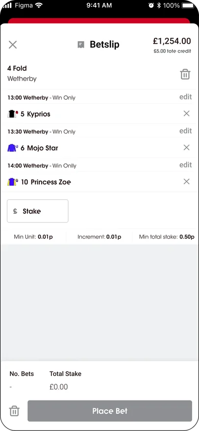
Reusing Components
- Reusing existing placepot components.
- Difficult to scale the betslip as there is no compartmentalisation.
-
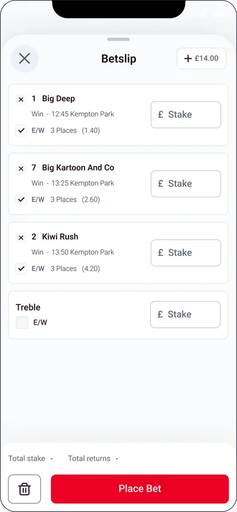
Chronological Order
- Primary button stands out after scaling back colour.
- Stakeholders fed back it wasn’t clear which horses were in the treble.
-
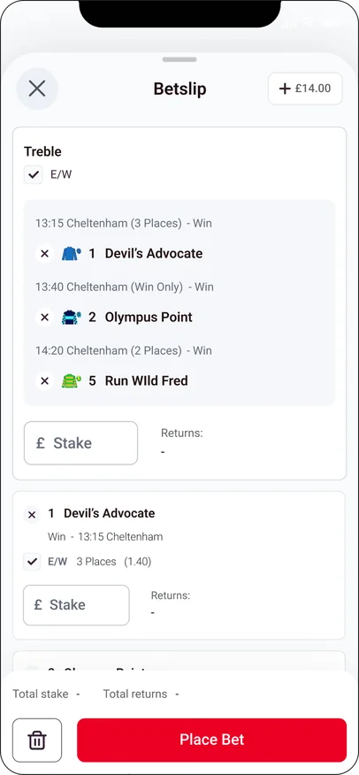
Final Design
- Multiple at the top of the visual hierarchy.
- Added returns to show the value of the bets.
Validation
Eight customer interviews were conducted with Tote customers. They were shown a beta build and tasked with betting on a multiple of their choosing.
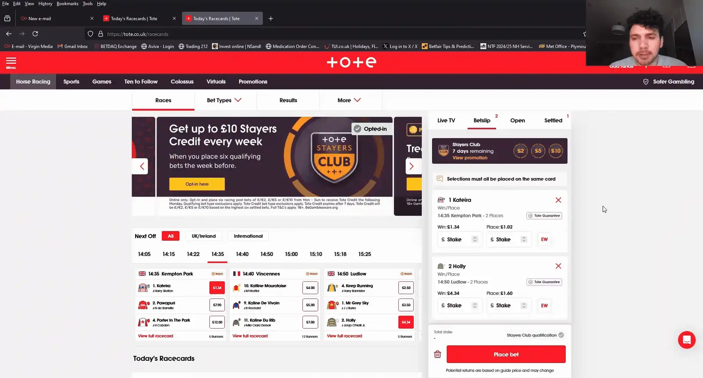
Interview Insights
-
Potential Returns
- Telling customers the return for their bet is the biggest motivator for placing multiples.
- The Tote’s return value can change depending on the market. Therefore, we used the term ‘Potential returns’ and tested it with customers.
-
Cross-Meeting
- Customers would add favourites for the next races regardless of which meeting the selections were from.
- The Tote does not have the functionality to support this.
-
Error Messaging
- The error messaging used in the interviews wasn’t clear to customers, who were confused when we could not combine their selections.
Iterations
Customer interviews showed that the current error messaging was not clear to customers. I changed the colour so it stood out more, and also changed the language, as ‘same card’ is not universally understood.
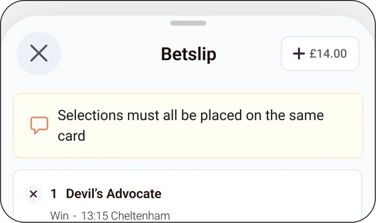
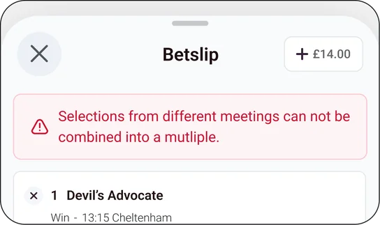
User Journey
-
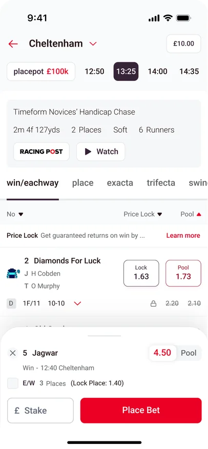
Single Quickbet
-
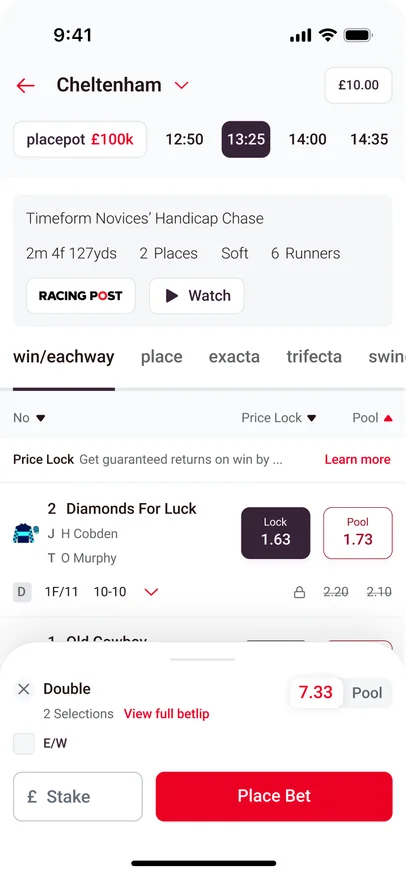
Multiple Quickbet
-
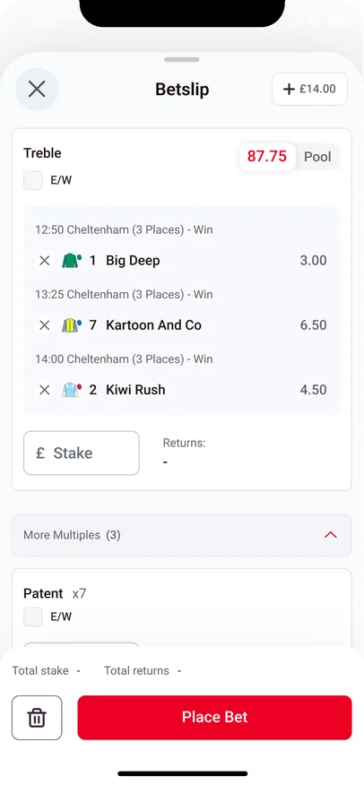
Multiple Full Betslip
-
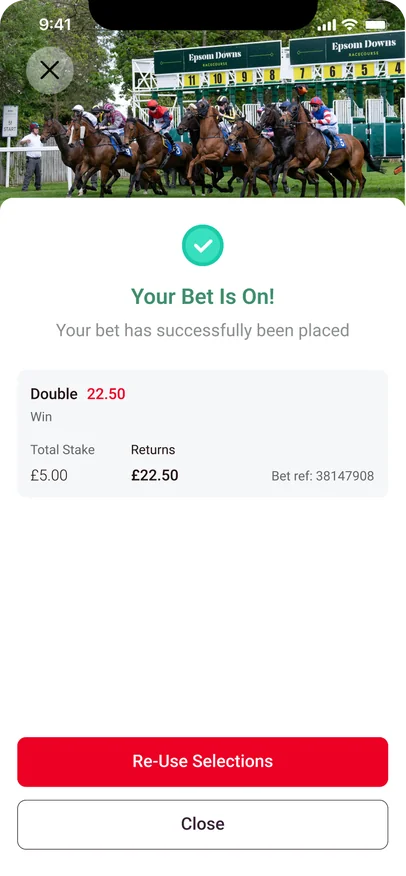
Bet Receipt
Key Design Decisions
Potential Returns
Showing the value a customer may win when they input a stake.
There was hesitation among stakeholders about displaying a returns value as customers may be frustrated when their returns are less than the value shown at bet placement. The research I presented convinced them that customers needed to see that value as a motivator for placing that bet. The term ‘potential’ was tested and customers’ feedback showed they understood the return value was not guaranteed.
Card Layout
Wireframing and research showed that a redesign of the betslip was necessary.
The redesign had to consider a scaling betslip, as the changes would be universal. Using cards made it easier for customers to see which information was related to each other, so there would be limited confusion when several bets are displayed in their betslip.
Typeface
The licence of the existing typeface was about to expire. Rather than repaying for a bespoke package, I suggested using a free Google typeface.
I chose a Google typeface because of its low cost and accessibility on digital platforms. I liaised with the marketing and branding departments to ensure we were all aligned on this decision.
Results & Impact
The UK Tote is the only pool operator in the world where you can combine several win bets into a single multiple. No other tote offers this, including tote products on bookmakers’ sites and international totes such as TAB (Australia) and PMU (France). Customers were surveyed post-launch, with both quantitative and qualitative data being largely positive.
£4.5M Annually
Multiples Revenue
55%
Of customers bet on multiples regularly
World First
No other pool operator provides multiple bet types
Reflections and Learnings
Agile Delivery
I broke the designs up into three separate drops so we could start measuring the MVP’s performance and gather feedback.
I built a strong relationship with the product manager and engineers to help create the requirements for the MVP. Together we planned how we would deliver the next iterations and improve the experience based on feedback.
Component Consistency
Contributed components to the design system.
Developers did not naturally adopt the design system, so I hosted several sessions, explaining that this is where the source of truth for each component and its variations would be housed.